Sapori autentici della Sardegna spediti in tutto il mondo
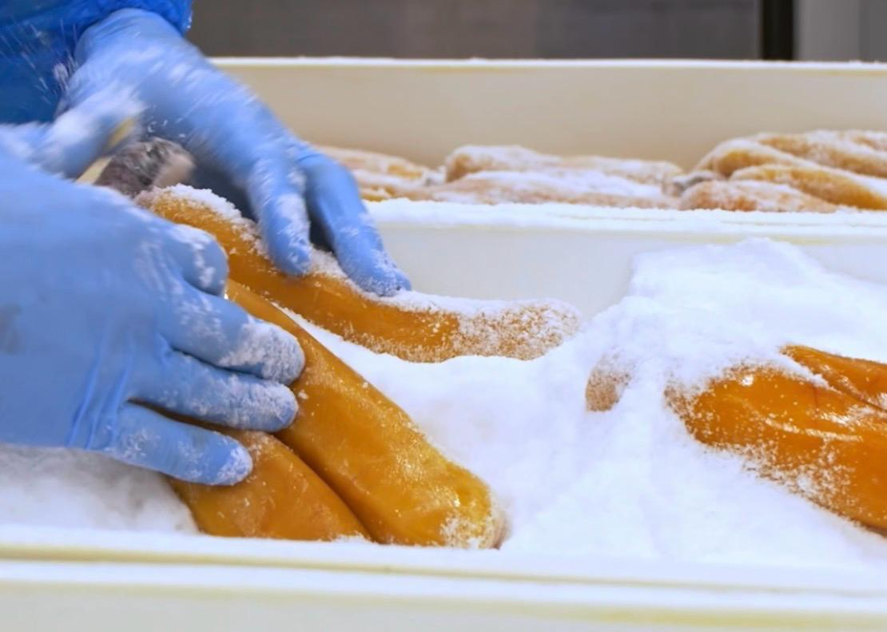
Una passione per i sapori autentici della Sardegna
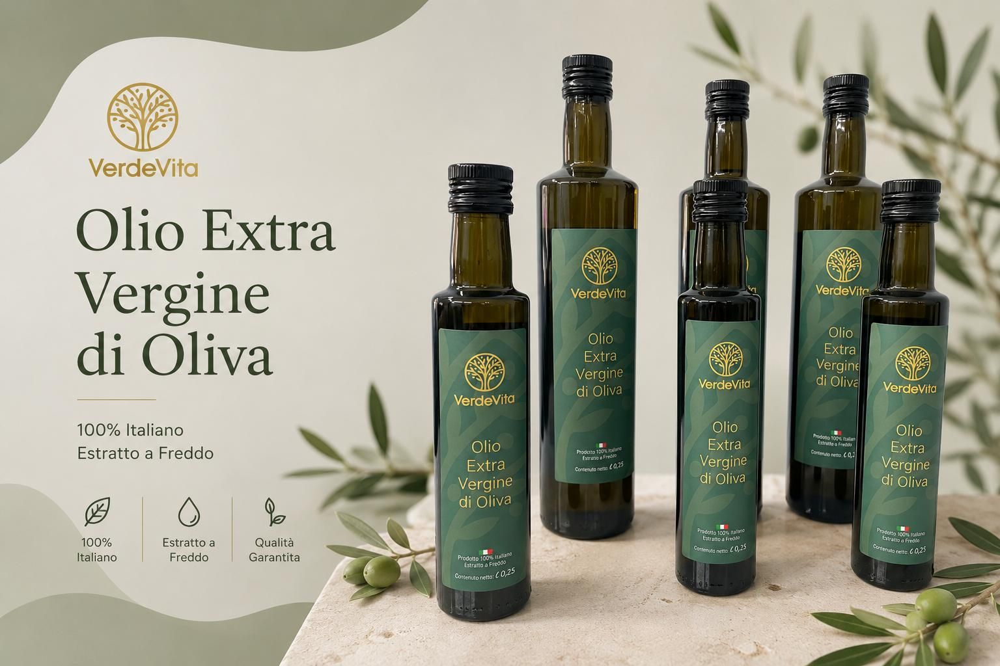
Co-fondatrice e Responsabile Sviluppo Commerciale
Attraverso il marketing, la comunicazione e lo sviluppo commerciale, valorizza le eccellenze gastronomiche dell’isola e ne promuove la diffusione in Italia e all’estero.
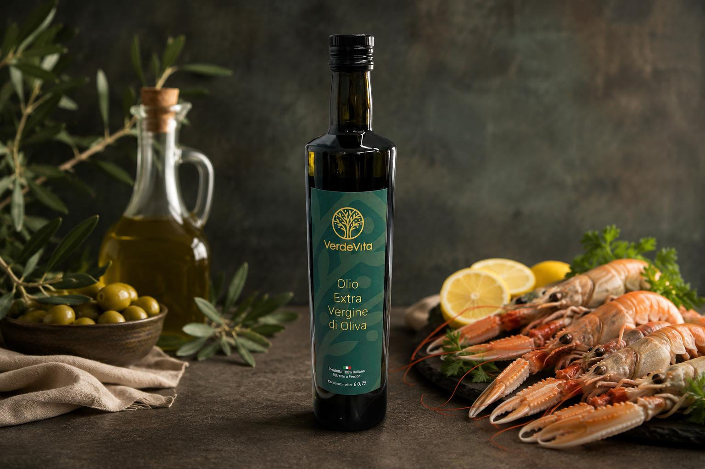
Co-fondatore e Custode della Tradizione Sarda
Profondo conoscitore della cultura e delle tradizioni dell’isola, contribuisce alla selezione di prodotti che raccontano l’autenticità della Sardegna e il legame con il territorio.
Sarda Sapori nasce dalla volontà di esportare i prodotti ittici più autentici della Sardegna, rispettando tradizioni centenarie e utilizzando le migliori tecnologie di produzione.
Ogni prodotto è una testimonianza della qualità, della dedizione e dell'amore per questa meravigliosa isola.
Selezione, tradizione e qualità in ogni prodotto
Spediamo i nostri prodotti in tutto il mondo, garantendo freschezza e qualità da Iglesias a ogni angolo del pianeta.
Ogni prodotto è selezionato con cura e segue rigidi controlli di qualità per assicurare l'eccellenza.
Conserviamo i metodi tradizionali, combinandoli con tecnologie moderne per il miglior risultato possibile.
Ogni prodotto è confezionato con cura per garantire la preservazione dei sapori durante il trasporto.
Sapori autentici della tradizione sarda, dalla bottarga alle specialità al tartufo
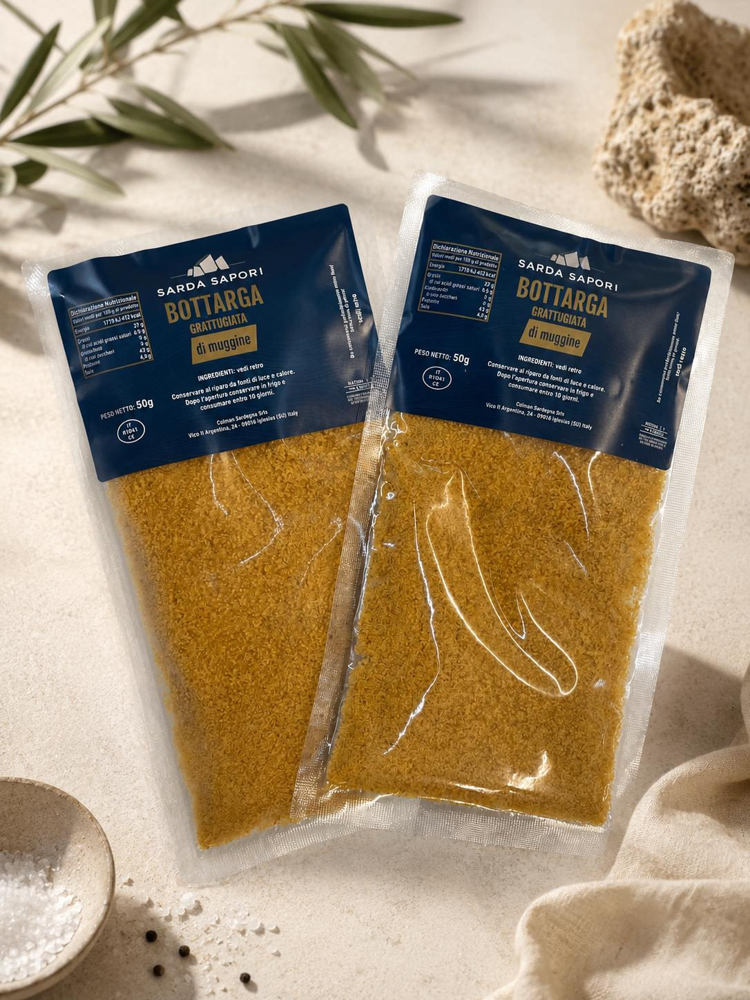
Prodotto costituito da un processo di accurata scelta delle sacche ovariche del cefalo, dalla loro salatura e successiva essiccazione.
Utilizzo: Grattugiata sulle pietanze, in fette sottilissime con olio d'oliva, o in insalate.
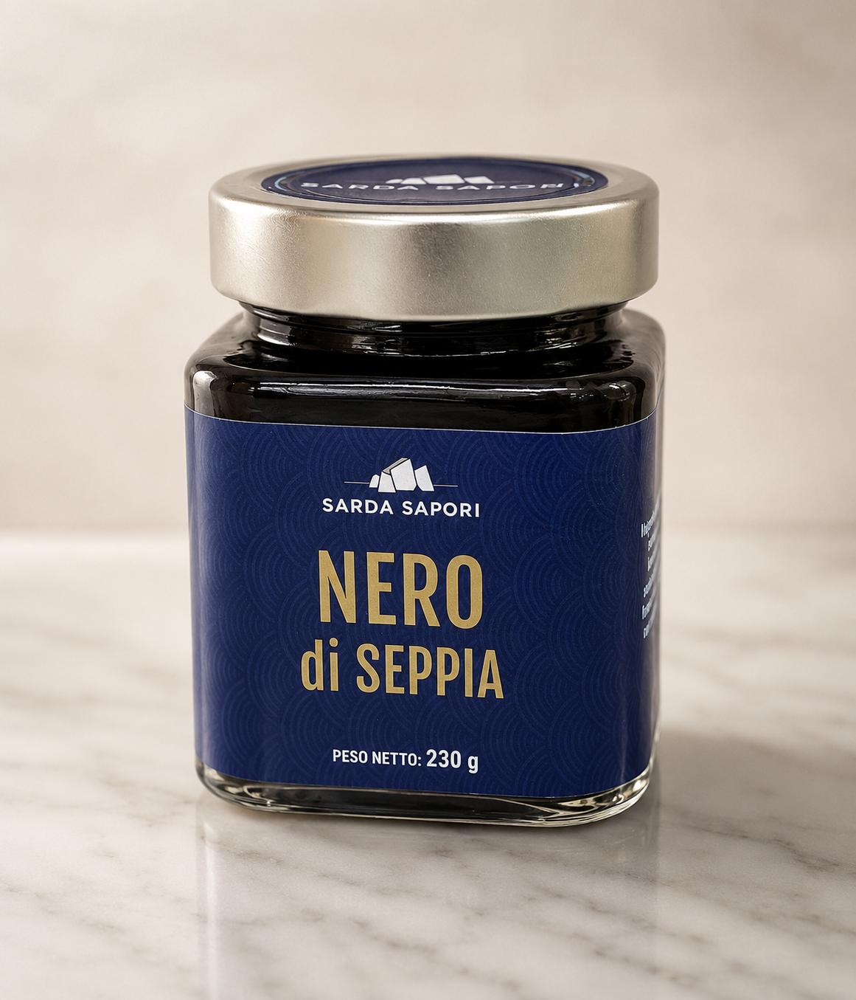
Dal potere antinfiammatorio, antiossidante e antibatterico, è l'inchiostro difensivo dei cefalopodi, estratto e trasformato in ingrediente gastronomico.
Utilizzo: Condimento per la pasta, miscelato alle farine per pizze e pani neri.
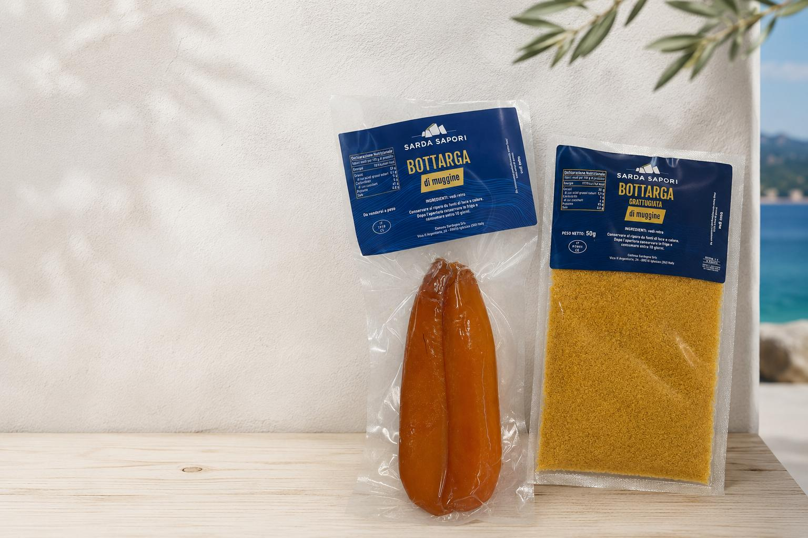
Crema prelibata in cui uova di cefalo, olio d'oliva, bottarga di muggine e acciughe si uniscono in perfetta armonia.
Utilizzo: Condimento per primi piatti, crema spalmabile su crostini.
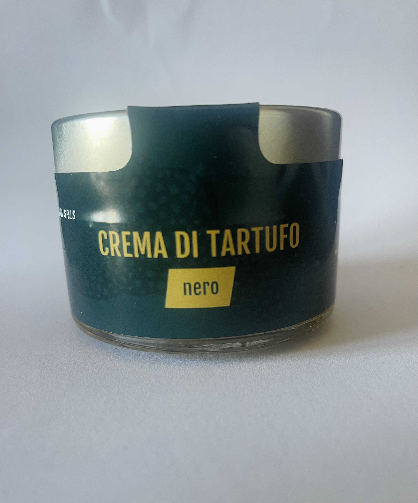
Una crema pura e intensa, preparata con tartufo nero estivo macinato e olio extravergine d'oliva sardo.
Utilizzo: Perfetta con tagliolini e pasta fresca, uova, risotti, carni, formaggi freschi, pane carasau, crudi di pesce e gamberi.
Richiedi Info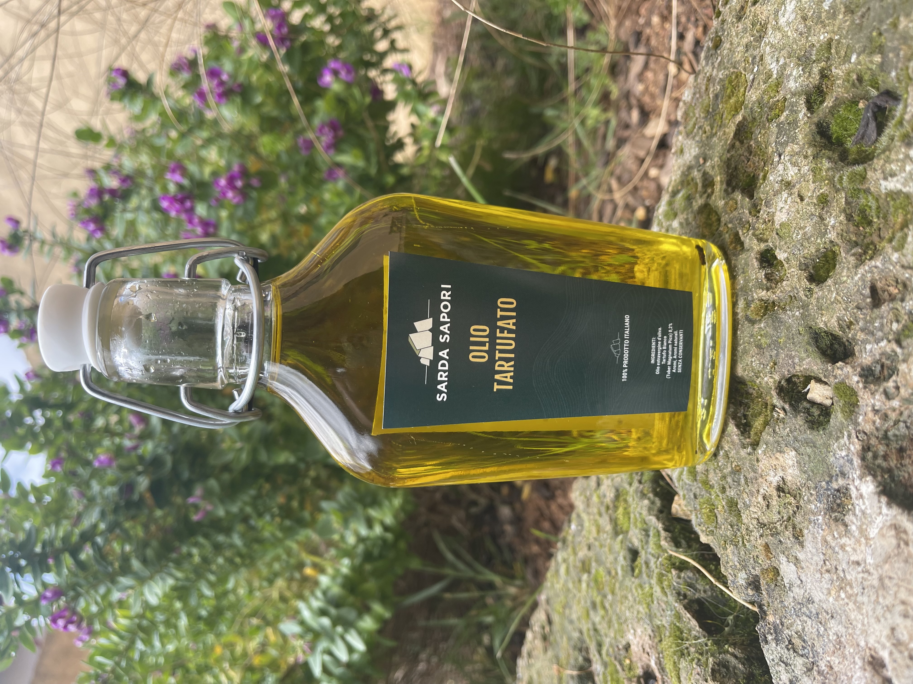
Olio extravergine d'oliva sardo arricchito dal sapore del tartufo bianco, avvolgente e dall'aroma intenso.
Utilizzo: Bastano poche gocce su tagliolini, pasta fresca, uova, risotti, pizze, focacce, carni e crudi di pesce.
Richiedi Info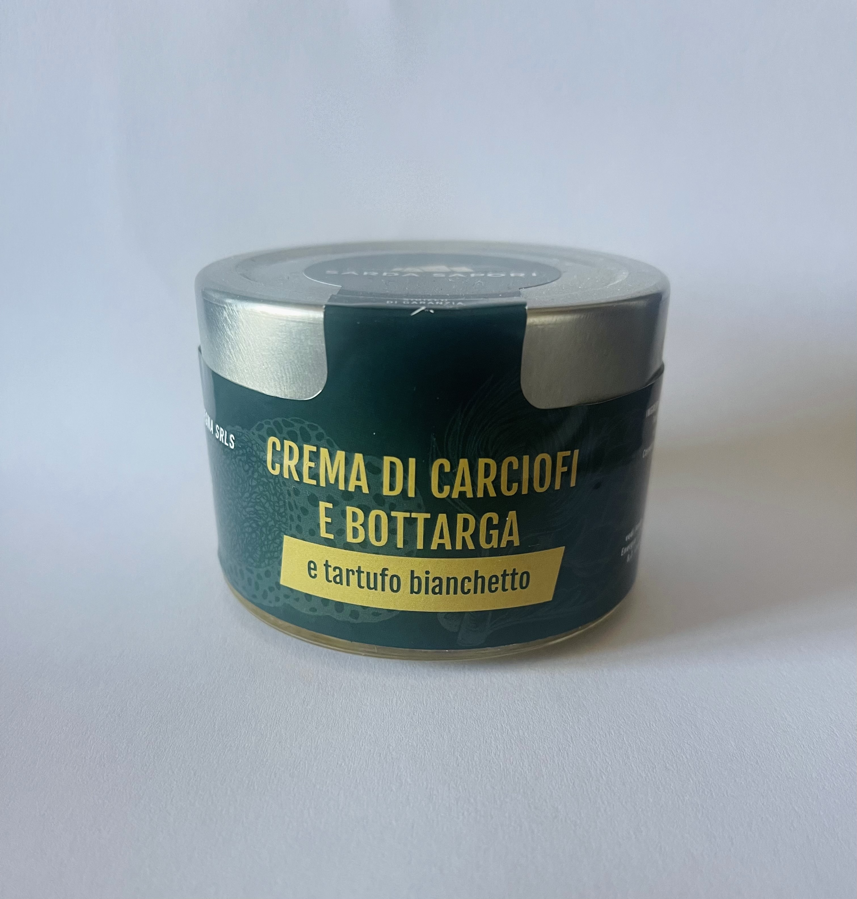
Carciofo spinoso sardo, bottarga di muggine e tartufo bianchetto si uniscono in una crema dal carattere forte e deciso.
Utilizzo: Ideale per tagliolini, pasta fresca, fregola, risotto, bruschette e pane carasau.
Richiedi Info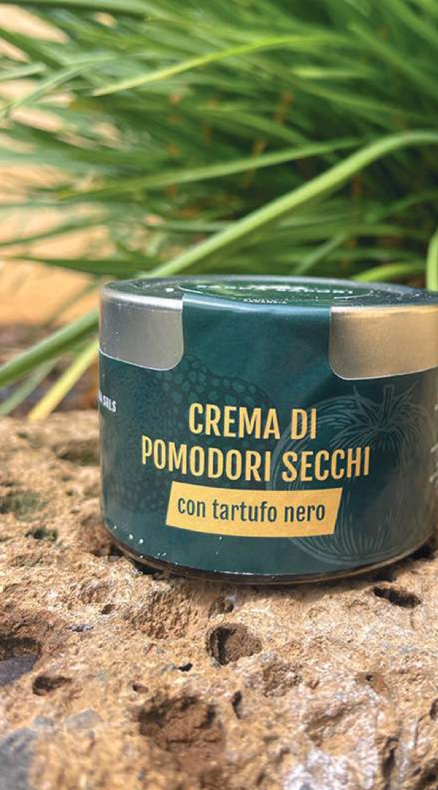
Una crema sfiziosa in cui il gusto salato e pungente del pomodoro secco incontra l'intensità del tartufo nero estivo.
Utilizzo: Ottima con tagliolini, pasta corta, risotti, uova al tegamino, formaggi, carni bianche e crostini caldi.
Richiedi Info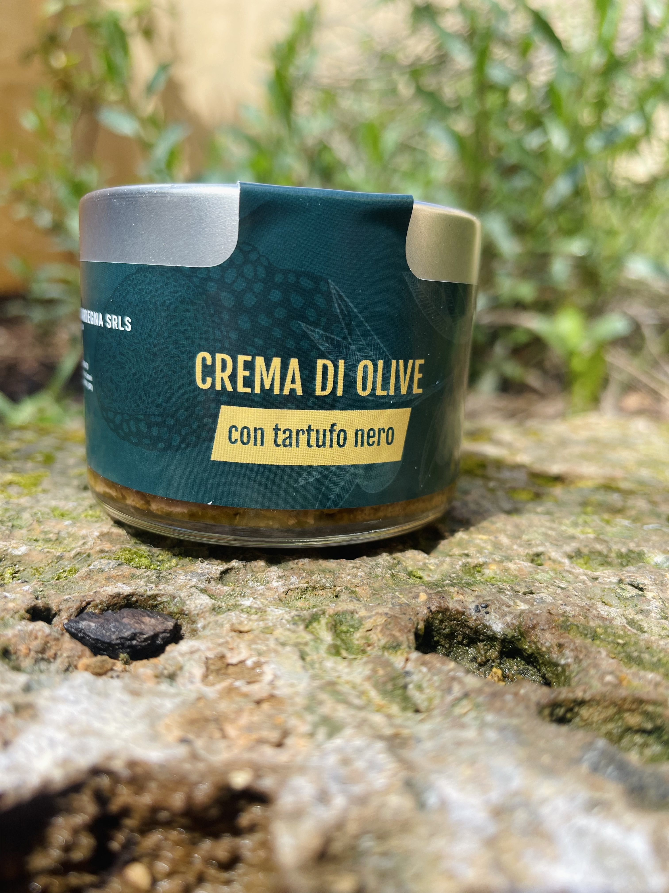
Oliva Pizz'e Carroga dal gusto forte e deciso, macinata con tartufo nero per una crema raffinata e ricca di personalità.
Utilizzo: Perfetta per risotti caldi, pasta fredda, fregola risottata e crostini fragranti.
Richiedi Info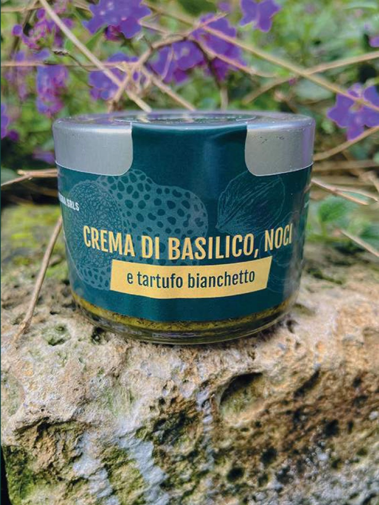
Basilico tritato grossolanamente, noci croccanti e tartufo bianchetto creano un'alternativa originale al classico pesto.
Utilizzo: Ideale per pasta, mozzarelle e burrate, insalate e crostini caldi.
Richiedi Info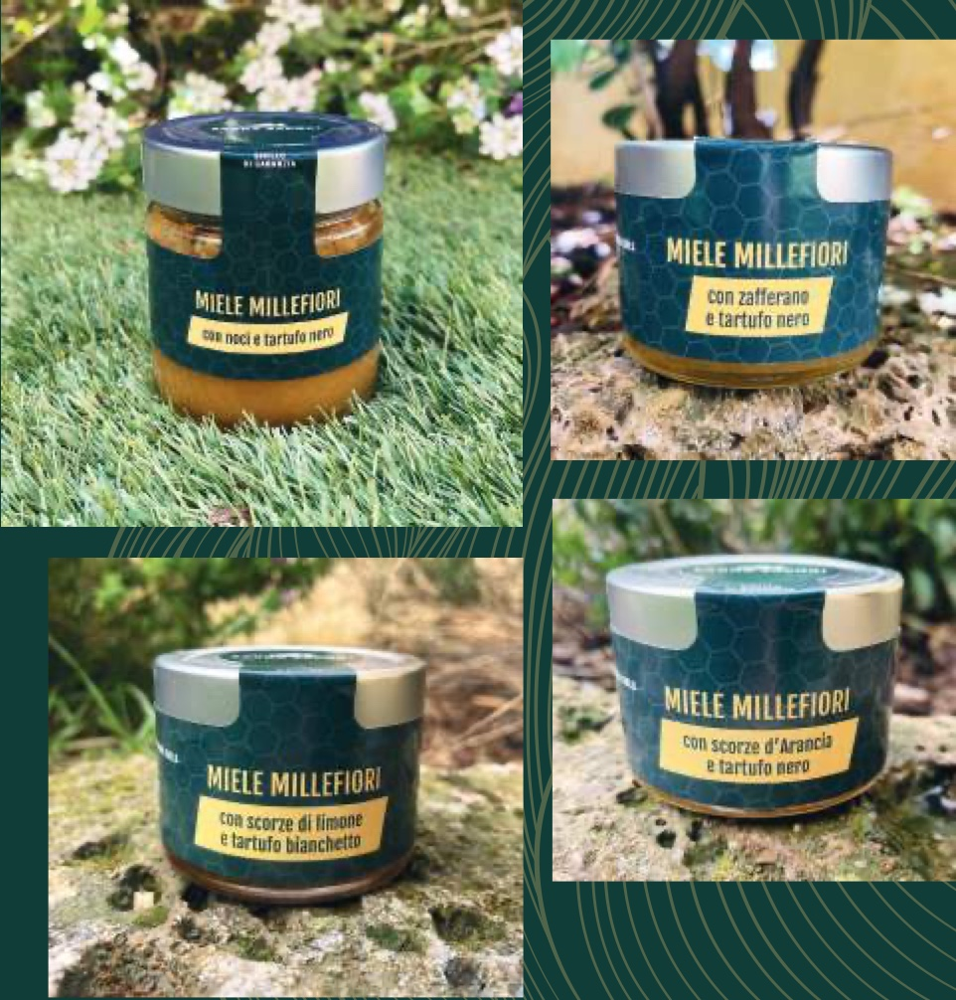
Una collezione realizzata con miele del Sarcidano, arricchito con frutta e tartufo per abbinamenti dolci e ricercati.
Utilizzo: Perfetti con formaggi freschi o fusi, dolci, seadas, colazioni e aperitivi.
Richiedi InfoNel cuore della Sardegna
Siamo radicati nel territorio sardo, dove la tradizione incontra l'innovazione per creare prodotti di qualità superiore.
COLMAN SARDEGNA SRLS
Vico II Argentaria 24
Iglesias, Sardegna (Italy)
04058280928
Siamo sempre disponibili per informazioni e ordini
Per ordini e informazioni su spedizioni internazionali, contattate direttamente i nostri fondatori.